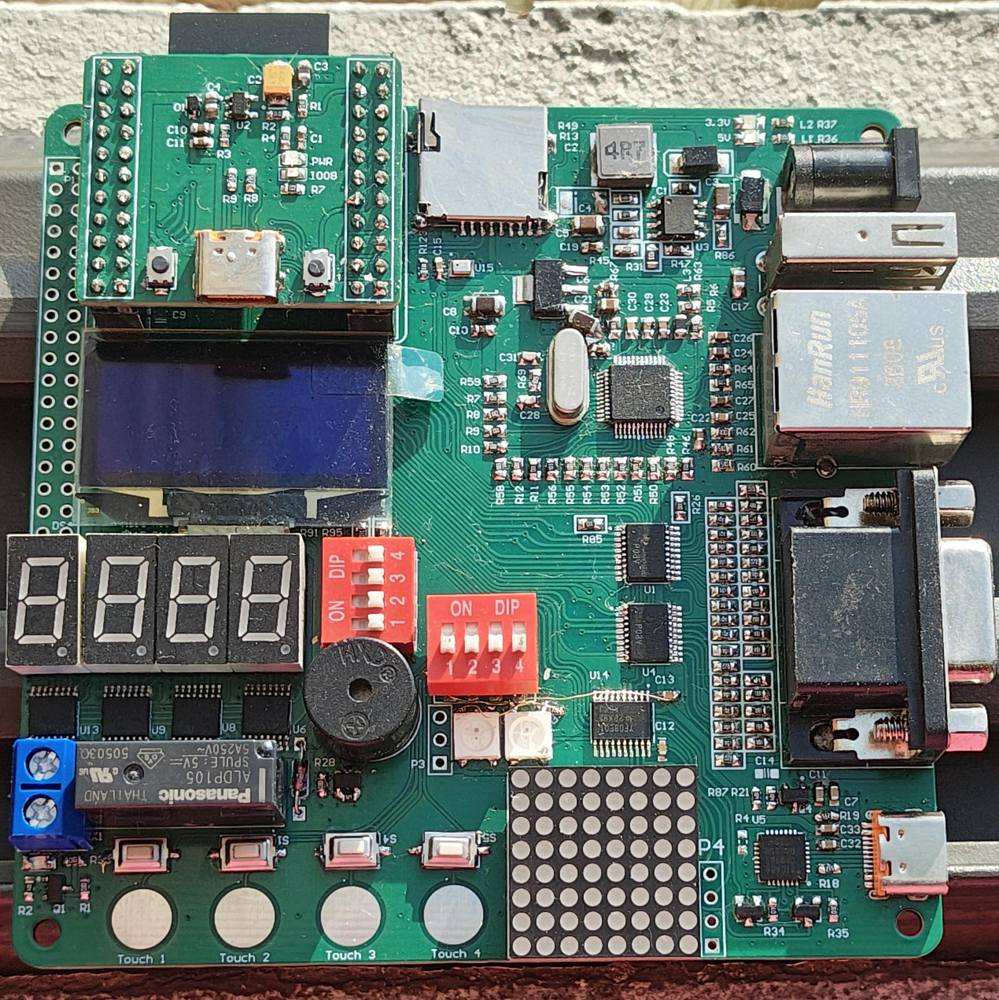

Introduction#
The STEM Development kit is a low cost esp32s3 based microcontroller Development board, which supports advance peripherals like ethernet, USB, VGA which set it apart from traditional MCU development kit where it’s either lack of modern/ advanced communication protocol, too expensive, or only reserve for FPGA.
The STEAM Development kit is created to bridge that gap, where with the modular architecture and open source hardware nature it’s not only opens up the kit for different kinds of microcontroller but also FPGA and CLPD to such open platform

The STEAM development board#
Geting started !#
The instruction on bringing up The STEAM development board and how to develop with it.
A guide on how to install the SDK and the necessary toolchains, libraries for developing with the development kit.
A collection of example projects with various difficulties to help user to get on with the development board.
As the opensource nature of the The STEAM development board all hardware design files and documentation can be found here